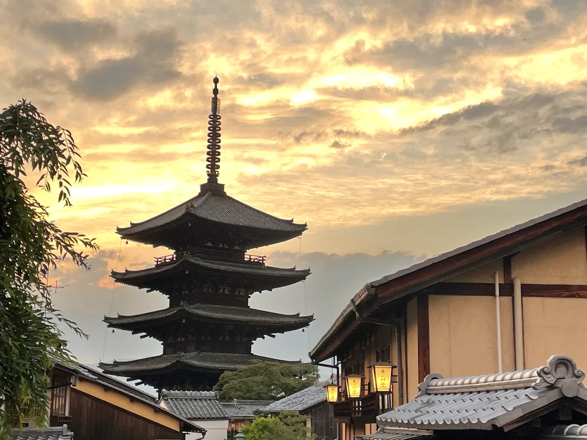

1. Kyoto, Japan

Kyoto is renowned for its classical Buddhist temples, traditional wooden houses, historic shinto shrines, and serene Zen gardens.
"Kyoto offers an unbelievable blend of timeless tradition, tranquil nature, and spiritual heritage."
2. Tokyo, Japan

Tokyo, Japan's bustling capital, mixes ultra-modern skyscrapers and neon lights with historic temples like Senso-ji and vibrant shopping districts.
"Tokyo is a breathtaking metropolis where cutting-edge technology effortlessly meets rich cultural heritage."
3. Osaka, Japan
Osaka is famed for its modern architecture, energetic nightlife, historic Osaka Castle, and its reputation as Japan's culinary street food capital.
"Osaka captivates visitors with its warm hospitality, magnificent historic landmarks, and irresistible local food culture."